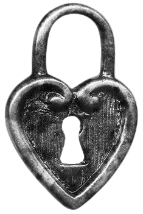
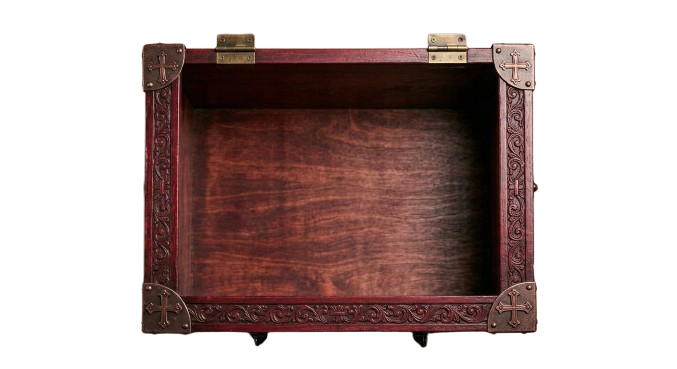

Ao coração que fez do meu destino um lugar de abrigo
Melissa,
Se esta carta chegou até ti, então foste além da superfície, além do ornamento, além de tudo o que se vê de imediato. E talvez seja justamente assim que o amor verdadeiro se revela: não no que se oferece ao primeiro olhar, mas no que se guarda com reverência até que a pessoa certa toque, com delicadeza, o segredo do nosso peito.
Há sentimentos que mal cabem na linguagem. Há presenças que mudam o relevo inteiro da vida. Tu foste assim para mim. Não como um acaso breve, nem como uma alegria passageira, mas como uma força suave e definitiva, dessas que reorganizam a alma em silêncio e fazem do futuro algo menos escuro, menos distante, mais habitável.
Em ti encontrei não apenas amor, mas reconhecimento. Como se uma parte antiga de mim, sempre errante, finalmente tivesse encontrado o nome da própria casa. Há em teu riso uma espécie de eternidade leve. Há em teu olhar uma paz que não apaga a intensidade do meu coração — apenas a acolhe. E isso, para mim, é das formas mais raras de milagre.
Se um dia o tempo tentar desgastar as bordas das nossas lembranças, eu ainda quero me lembrar assim: da maneira como teu nome floresce dentro de mim, do modo como teus gestos repousam no meu peito, da forma como a tua existência tornou o mundo mais belo do que era antes de ti.
Esta não é apenas uma página escondida. É uma fresta da minha alma. Um pequeno cofre aberto. Uma confissão silenciosa de que tudo o que há de mais sincero em mim te escolhe — com ternura, com espanto, com devoção.
Se me perguntarem o que desejo para o futuro, não responderei com datas, lugares ou promessas grandiosas. Direi apenas que quero continuar te escolhendo. Nos dias claros e nos dias difíceis. Nos instantes simples e nas noites memoráveis. Quero continuar fazendo de ti não só o amor da minha vida, mas a mais bonita verdade que ela já me contou.